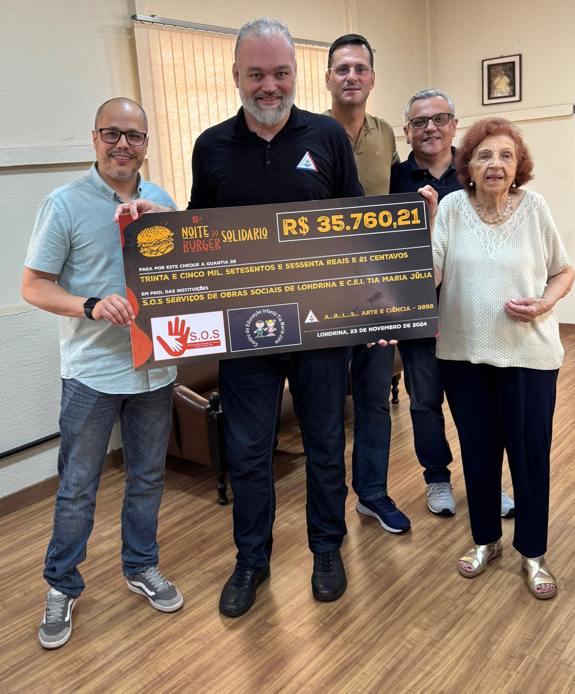
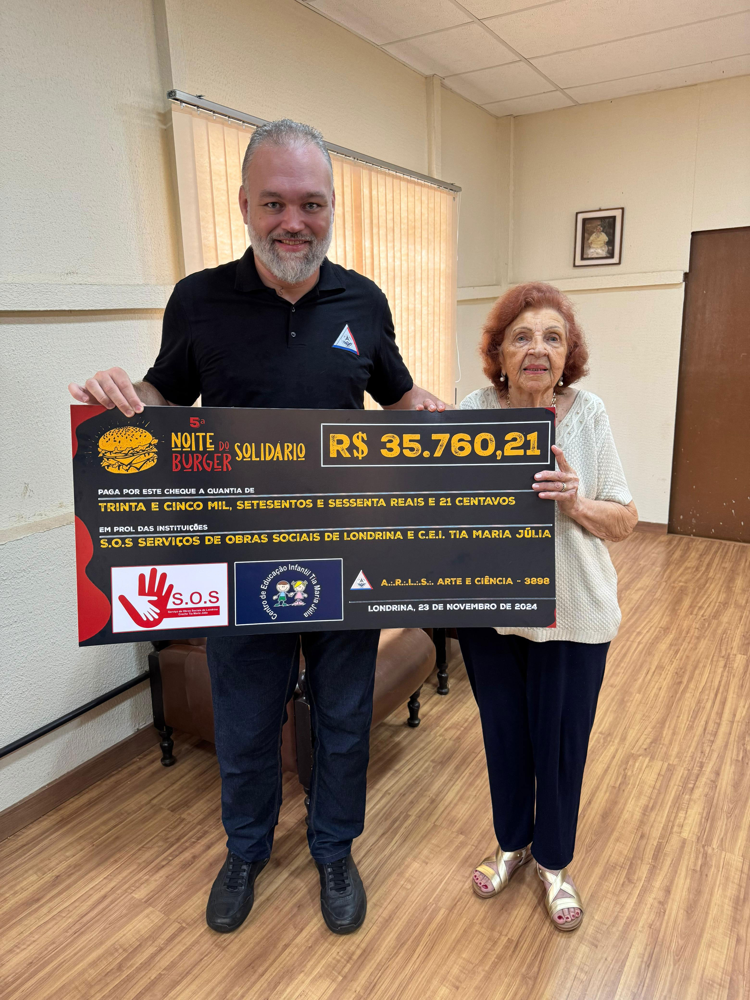
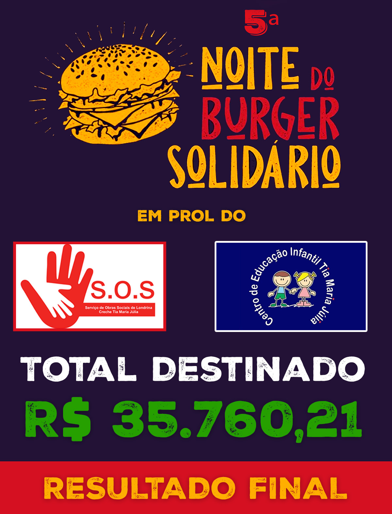
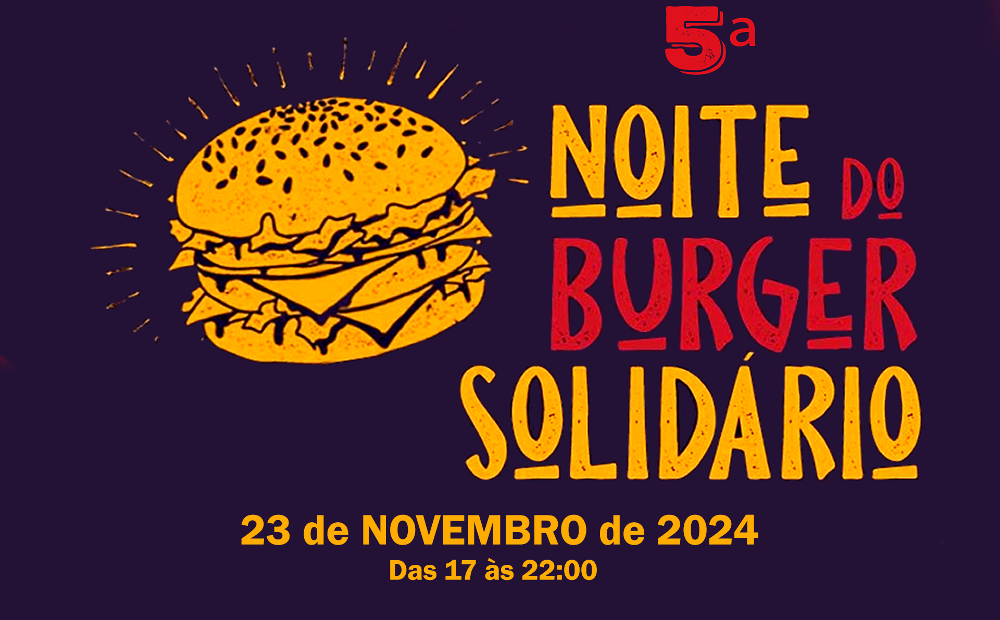
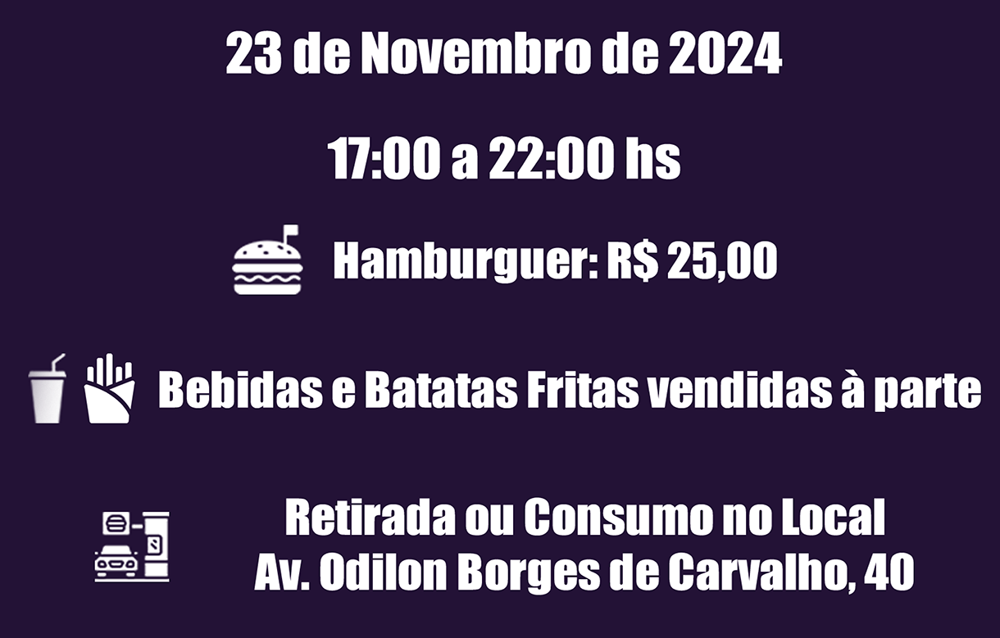

5ª Noite do Burger Solidário
R$35.760,21
valor arrecadado e destinado às ações da edição 2024
+29,29%
crescimento em relação ao evento anterior
2 instituições
apoiadas diretamente pela edição daquele ano
Histórico da edição 2024
Resultado oficial entregue em 27/12/2024
2024 fortaleceu a corrente do bem.
No dia 27 de dezembro de 2024, a organização entregou o cheque de R$35.760,21 ao SOS - Serviços de Obras Sociais de Londrina, representado pela presidente Dona Ilda, de 93 anos, em reconhecimento ao trabalho dedicado desde 1969.
A edição também beneficiou o CEI Tia Maria Julia, ampliou o alcance do projeto e consolidou um crescimento de aproximadamente 29,29% em relação ao evento anterior.
Entrega oficial


5º Burger Solidário
O encerramento de 2024 confirmou o resultado da campanha e reforçou a transparência da entrega às instituições beneficiadas.
Resultado oficial

Graças à generosidade e ao trabalho árduo de todos, o 5º Burger Solidário foi um sucesso e superou o evento anterior.
Mais informações sobre o evento


O material da edição de 2024 reforçou o caráter solidário do projeto e apresentou de forma clara a proposta do evento para patrocinadores, apoiadores e participantes.
Seja um patrocinador, contribua também com esta corrente do bem. O histórico comprova que o projeto evoluiu sem perder o compromisso com impacto social real.
Fechamento da edição
A edição de 2024 encerrou um ciclo de crescimento real do projeto, com entrega oficial do resultado, transparência na prestação de contas e impacto direto nas instituições beneficiadas.
Mais do que um bom resultado financeiro, esse fechamento mostrou que a Noite do Burger Solidário já tinha se consolidado como uma iniciativa confiável, capaz de mobilizar empresas, voluntários e comunidade em torno de uma causa séria.
Entrega oficial
Crescimento do projeto
Histórico preservado
O legado de 2024 preparou o terreno para uma edição ainda mais forte em 2025 e para a expansão que hoje aparece na campanha de 2026.
Instituições beneficiadas
A edição de 2024 foi realizada em prol de duas instituições de Londrina.
Vídeo institucional
Conheça melhor o SOS Londrina, uma das instituições beneficiadas naquele ano.
O vídeo institucional do SOS Londrina agora é servido diretamente pelo site para evitar falhas de configuração externas do player.
Material institucional
PDF da beneficiada de 2024
Patrocinadores de 2024
As marcas que ajudaram a viabilizar a 5ª edição do Burger Solidário.
Junte-se ao 5º Burger Solidário, apoie uma causa importante e veja sua marca em evidência nas redes sociais e no evento. O histórico abaixo preserva todas as empresas que estiveram conosco em 2024.
Quer acompanhar a evolução completa do projeto?
Você pode seguir para a página de 2025, abrir a edição de 2023 em uma página própria ou conhecer separadamente a história que originou a Noite do Burger Solidário.